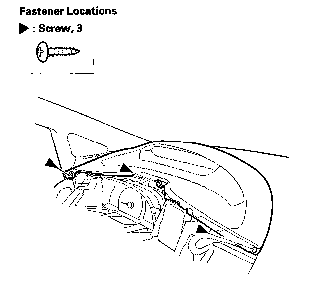
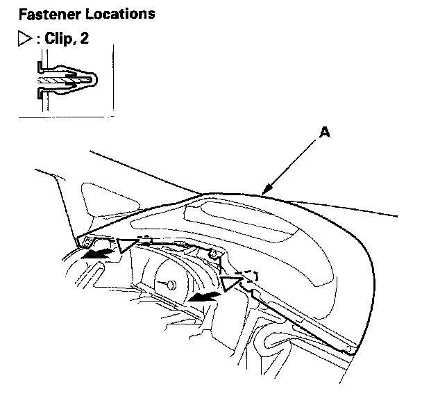
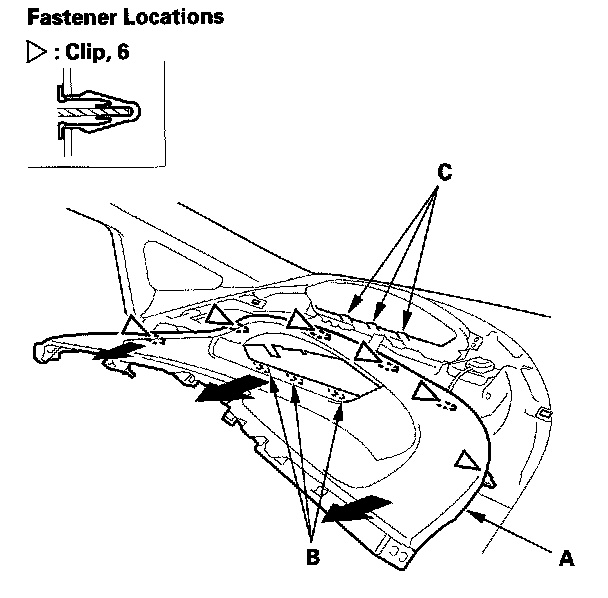

Instrument Panel
Instrument Panel Removal/InstallationSpecial Tools Required
KTC trim tool set SOJATP2014 *
* Available through the American Honda Tool and Equipment Program
NOTE:
- Take care not to scratch the dashboard and related parts.
- Use the appropriate tool from the KTC trim tool set to avoid damage when prying components.
1. Remove these items:
- Subdisplay visor
- Navigation unit, with navigation system
- Audio unit, without navigation system

2. Remove the screws.

3. Detach the clips along the lower edge of the instrument panel (A).

4. Detach the clips along the upper edge of the instrument panel (A). Gently pull out the instrument panel to release the hooks (B) from the holder (C) of the gauge control module.
5. Install the instrument panel in the reverse order of removal, and note these items:
- Check if the clips are damaged or stress-whitened, and if necessary, replace them with new ones.
- Push the clips into place securely.